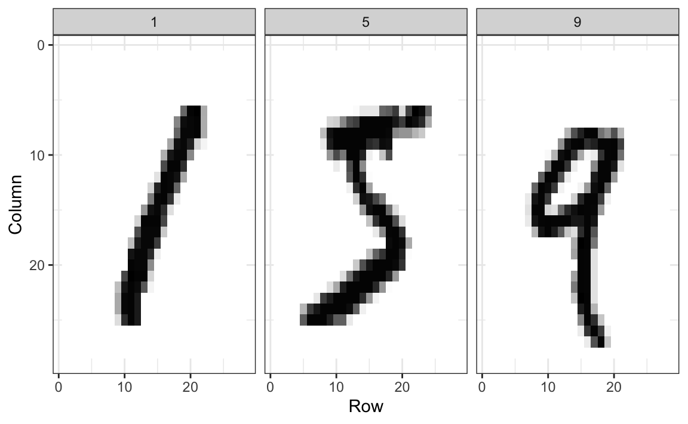
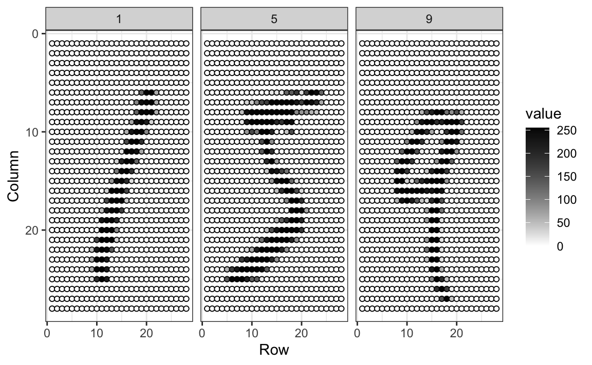
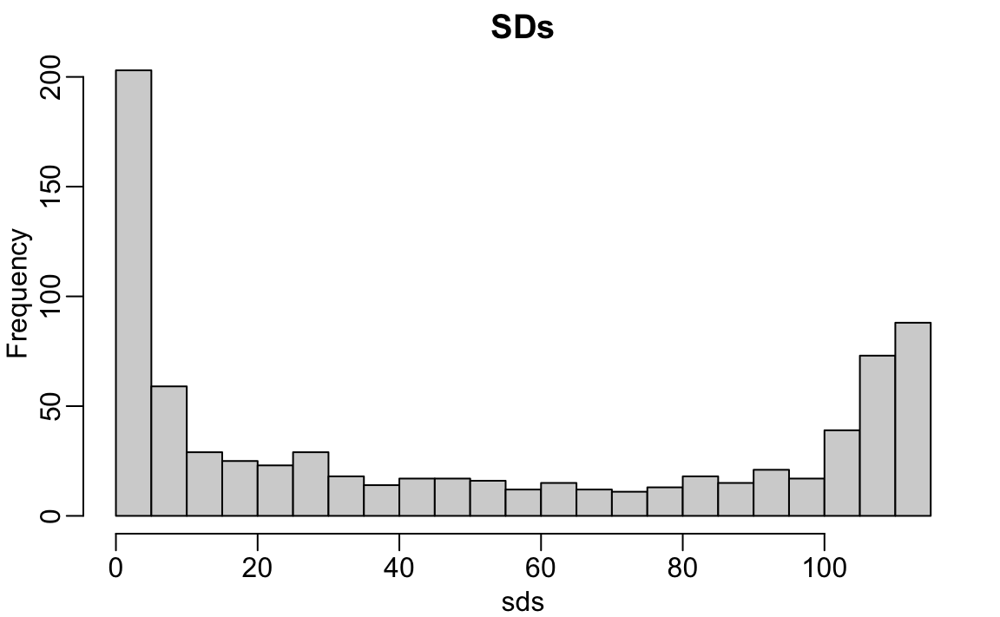
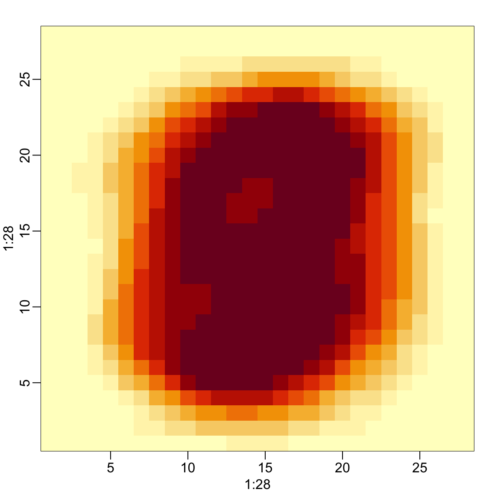
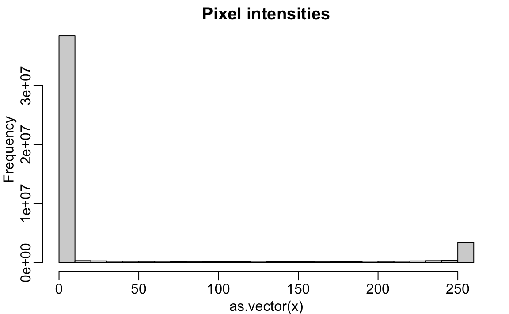

20 Matrices in R
When the number of variables associated with each observation is large and they can all be represented as a number, it is often more convenient to store them in a matrix and perform the analysis with linear algebra operations, rather than storing them in a data frame and performing the analysis with tidyverse or data.table functions. With matrices, variables for each observation are stored in a row, resulting in a matrix with as many columns as variables. In statistics, we refer to values represented in the rows of the matrix as the covariates or predictors and, in machine learning, we refer to them as the features.
In linear algebra, we have three types of objects: scalars, vectors, and matrices. We have already learned about vectors in R, and, although there is no data type for scalars, we can represent them as vectors of length 1. In this chapter, we learn how to work with matrices in R and relate them to linear algebra notation and concepts.
20.1 Case study: MNIST
The first step in handling mail received in the post office is to sort letters by zip code:

In the Machine Learning part of this book, we will describe how we can build computer algorithms to read handwritten digits, which robots then use to sort the letters. To do this, we first need to collect data, which in this case is a high-dimensional dataset and best stored in a matrix.
The MNIST dataset was generated by digitizing thousands of handwritten digits, already read and annotated by humans1. Below are three images of written digits.
The images are converted into \(28 \times 28 = 784\) pixels and, for each pixel, we obtain a grey scale intensity between 0 (white) and 255 (black). The following plot shows the individual features for each image:

For each digitized image, indexed by \(i\), we are provided with 784 variables and a categorical outcome, or label, representing the digit among \(0, 1, 2, 3, 4, 5, 6, 7 , 8,\) and \(9\) that the image is representing. Let’s load the data using the dslabs package:
library(tidyverse)
library(dslabs)
mnist <- read_mnist()In these cases, the pixel intensities are saved in a matrix:
class(mnist$train$images)
#> [1] "matrix" "array"The labels associated with each image are included in a vector:
table(mnist$train$labels)
#>
#> 0 1 2 3 4 5 6 7 8 9
#> 5923 6742 5958 6131 5842 5421 5918 6265 5851 594920.1.1 Motivating tasks
To motivate the use of matrices in R, we will pose six tasks related to the handwritten digits data and then show the fast and simple code that solves them.
1. Visualize the original image. The pixel intensities are provided as rows in a matrix. We will show how to convert these to a matrix that we can visualize.
2. Do some digits require more ink to write than others? We will study the distribution of the total pixel darkness and how it varies by digits.
3. Are some pixels uninformative? We will study the variation of each pixel across digits and remove predictors (columns) associated with pixels that don’t change much and thus can’t provide much information for classification.
4. Can we remove smudges? We will first look at the distribution of all pixel values. Next, we will use this to pick a cutoff to define unwritten space. Then, we set anything below that cutoff to 0.
5. Binarize the data. First, we will look at the distribution of all pixel values. We will then use this to pick a cutoff to distinguish between writing and no writing. Afterward, we will convert all entries into either 1 or 0.
6. Standardize the digits. We will scale each of the predictors in each entry to have the same average and standard deviation.
To complete these, we will have to perform mathematical operations involving several variables. The tidyverse or data.table are not developed to perform these types of mathematical operations. For this task, it is convenient to use matrices.
To simplify the code below, we will rename these x and y respectively:
x <- mnist$train$images
y <- mnist$train$labels20.2 Dimensions of a matrix
The dimension of a matrix is an important characteristic needed to assure that certain linear algebra operations can be performed. The dimension is a two-number summary defined as the number of rows \(\times\) the number of columns.
The nrow function tells us how many rows that matrix has:
nrow(x)
#> [1] 60000and ncol tells us how many columns:
ncol(x)
#> [1] 784We learn that our dataset contains 60,000 observations (images) and 784 features (pixels).
The dim function returns the rows and columns:
dim(x)
#> [1] 60000 78420.3 Creating a matrix
In R, we can create a matrix using the matrix function. The first argument is a vector containing the elements that will fill up the matrix. The second and third arguments determine the number of row and columns, respectively. So a typical way to create a matrix is to first obtain a vector of numbers containing the elements of the matrix and feeding it to the matrix function. For example, to create a \(100 \times 2\) matrix of normally distributed random variables, we write:
Note that by default the matrix is filled in column by column:
matrix(1:15, 3, 5)
#> [,1] [,2] [,3] [,4] [,5]
#> [1,] 1 4 7 10 13
#> [2,] 2 5 8 11 14
#> [3,] 3 6 9 12 15To fill the matrix row by row, we can use the byrow argument:
matrix(1:15, 3, 5, byrow = TRUE)
#> [,1] [,2] [,3] [,4] [,5]
#> [1,] 1 2 3 4 5
#> [2,] 6 7 8 9 10
#> [3,] 11 12 13 14 15The function as.vector converts a matrix back into a vector:
If the product of columns and rows does not match the length of the vector provided in the first argument, matrix recycles values. If the length of the vector is a sub-multiple or multiple of the number of rows, this happens without warning:
matrix(1:3, 3, 5)
#> [,1] [,2] [,3] [,4] [,5]
#> [1,] 1 1 1 1 1
#> [2,] 2 2 2 2 2
#> [3,] 3 3 3 3 320.4 Subsetting
To extract a specific entry from a matrix, for example the 300th row of the 100th column, we write:
x[300,100]We can extract subsets of the matrices by using vectors of indexes. For example, we can extract the first 100 pixels from the first 300 observations like this:
x[1:300,1:100]To extract an entire row or subset of rows, we leave the column dimension blank. So the following code returns all the pixels for the first 300 observations:
x[1:300,]Similarly, we can subset any number of columns by keeping the first dimension blank. Here is the code to extract the first 100 pixels:
x[,1:100]Task 1: Visualize the original image
For instance, let’s try to visualize the third observation. From the label, we know this is a:
mnist$train$label[3]
#> [1] 4The third row of the matrix x[3,] contains the 784 pixel intensities. We can assume these were entered in order and convert them back to a \(28 \times 28\) matrix using:
grid <- matrix(x[3,], 28, 28)To visualize the data, we can use image in the followin way:
image(1:28, 1:28, grid)However, because the y-axis in image goes bottom to top and x stores pixels top to bottom the code above shows shows a flipped image. To flip it back we can use:
image(1:28, 1:28, grid[, 28:1])
20.5 Mathematical notation
Matrices are usually represented with bold upper case letters:
\[ \mathbf{X} = \begin{bmatrix} x_{1,1}&x_{1,2}&\dots & x_{1,p}\\ x_{2,1}&x_{2,2}&\dots & x_{2,p}\\ \vdots & \vdots & \ddots & \vdots\\ x_{n,1}&x_{n,2}&\dots&x_{n,p}\\ \end{bmatrix} \]
with \(x_{i,j}\) representing the \(j\)-the feature for the \(i\)-th observation.
We denote vectors with lower case bold letters and represent them as one column matrices, often referred to as column vectors. R follows this convention when converting a vector to a matrix:
However, column vectors should not be confused with the columns of the matrix. They have this name simply because they have one column.
Mathematical descriptions of machine learning often make reference to vectors representing the \(p\) features:
\[ \mathbf{x} = \begin{bmatrix} x_1\\\ x_2\\\ \vdots\\\ x_p \end{bmatrix} \]
To distinguish between features associated with the observations \(i=1,\dots,n\), we add an index:
\[ \mathbf{x}_i = \begin{bmatrix} x_{i,1}\\ x_{i,2}\\ \vdots\\ x_{i,p} \end{bmatrix} \]
Bold lower case letters are also commonly used to represent matrix columns rather than rows. This can be confusing because \(\mathbf{x}_1\) can represent either the first row or the first column of \(\mathbf{X}\). One way to distinguish is to use notation similar to computer code: using the colon \(:\) to represent all. So \(\mathbf{X}_{1,:}\) represents the first row and \(\mathbf{X}_{:,1}\) is the first column. Another approach is to distinguish by the letter used to index, with \(i\) used for rows and \(j\) used for columns. So \(\mathbf{x}_i\) is the \(i\)th row and \(\mathbf{x}_j\) is the \(j\)th column. With this approach, it is important to clarify which dimension, row or column is being represented. Further confusion can arise because, as aforementioned, it is common to represent all vectors, including the rows of a matrix, as one-column matrices.
20.6 The transpose
A common operation when working with matrices is the transpose. We use the transpose to understand several concepts described in the next several sections. This operation simply converts the rows of a matrix into columns. We use the symbols \(\top\) or \('\) next to the bold upper case letter to denote the transpose:
\[ \text{if } \, \mathbf{X} = \begin{bmatrix} x_{1,1}&\dots & x_{1,p} \\ x_{2,1}&\dots & x_{2,p} \\ \vdots & \ddots & \vdots & \\ x_{n,1}&\dots & x_{n,p} \end{bmatrix} \text{ then }\, \mathbf{X}^\top = \begin{bmatrix} x_{1,1}&x_{2,1}&\dots & x_{n,1} \\ \vdots & \vdots & \ddots & \vdots \\ x_{1,p}&x_{2,p}&\dots & x_{n,p} \end{bmatrix} \]
In R we compute the transpose using the function t
One use of the transpose is that we can write the matrix \(\mathbf{X}\) as rows of the column vectors representing the features for each individual observation in the following way:
\[ \mathbf{X} = \begin{bmatrix} \mathbf{x}_1^\top\\ \mathbf{x}_2^\top\\ \vdots\\ \mathbf{x}_n^\top \end{bmatrix} \]
20.7 Row and column summaries
A common operation with matrices is to apply the same function to each row or to each column. For example, we may want to compute row averages and standard deviations. The apply function lets you do this. The first argument is the matrix, the second is the dimension, 1 for rows, 2 for columns, and the third is the function to be applied.
So, for example, to compute the averages and standard deviations of each row, we write:
To compute these for the columns, we simply change the 1 to a 2:
Because these operations are so common, special functions are available to perform them. So, for example, the functions rowMeans computes the average of each row:
avg <- rowMeans(x)and the matrixStats function rowSds computes the standard deviations for each row:
library(matrixStats)
sds <- rowSds(x)The functions colMeans and colSds provide the version for columns. For more fast implementations consider the functions available in matrixStats.
Task 2: Do some digits require more ink to write than others?
For the second task, related to total pixel darkness, we want to see the average use of ink plotted against digit. We have already computed this average and can generate a boxplot to answer the question:
From this plot we see that, not surprisingly, 1s use less ink than other digits.
20.8 Conditional filtering
One of the advantages of matrices operations over tidyverse operations is that we can easily select columns based on summaries of the columns.
Note that logical filters can be used to subset matrices in a similar way in which they can be used to subset vectors. Here is a simple example subsetting columns with logicals:
This implies that we can select rows with conditional expression. In the following example we remove all observations containing at least one NA:
This being a common operation, we have a matrixStats function to do it faster:
x[!rowAnyNAs(x),]Task 3: Are some pixels uninformative?
We can use these ideas to remove columns associated with pixels that don’t change much and thus do not inform digit classification. We will quantify the variation of each pixel with its standard deviation across all entries. Since each column represents a pixel, we use the colSds function from the matrixStats package:
sds <- colSds(x)A quick look at the distribution of these values shows that some pixels have very low entry to entry variability:

hist(sds, breaks = 30, main = "SDs")This makes sense since we don’t write in some parts of the box. Here is the variance plotted by location:

We see that there is little variation in the corners.
We could remove features that have no variation since these can’t help us predict.
So if we wanted to remove uninformative predictors from our matrix, we could write this one line of code:
Only the columns for which the standard deviation is above 60 are kept, which removes over half the predictors.
20.9 Indexing with matrices
An operation that facilitates efficient coding is that we can change entries of a matrix based on conditionals applied to that same matrix. Here is a simple example:
mat <- matrix(1:15, 3, 5)
mat[mat > 6 & mat < 12] <- 0
mat
#> [,1] [,2] [,3] [,4] [,5]
#> [1,] 1 4 0 0 13
#> [2,] 2 5 0 0 14
#> [3,] 3 6 0 12 15A useful application of this approach is that we can change all the NA entries of a matrix to something else:
x[!is.na(x)] <- 020.9.1 Task 4: Can we remove smudges?
A histogram of all our predictor data:

shows a clear dichotomy which is explained as parts of the image with ink and parts without. If we think that values below, say, 50 are smudges, we can quickly make them zero using:
new_x <- x
new_x[new_x < 50] <- 0Task 5: Binarizing the data
The histogram above seems to suggest that this data is mostly binary. A pixel either has ink or does not. Applying what we have learned, we can binarize the data using just matrix operations:
bin_x <- x
bin_x[bin_x < 255/2] <- 0
bin_x[bin_x > 255/2] <- 1We can also convert to a matrix of logicals and then coerce to numbers like this:
bin_X <- (x > 255/2)*120.10 Vectorization for matrices
In R, if we subtract a vector from a matrix, the first element of the vector is subtracted from the first row, the second element from the second row, and so on. Using mathematical notation, we would write it as follows:
\[ \begin{bmatrix} X_{1,1}&\dots & X_{1,p} \\ X_{2,1}&\dots & X_{2,p} \\ & \vdots & \\ X_{n,1}&\dots & X_{n,p} \end{bmatrix} - \begin{bmatrix} a_1\\\ a_2\\\ \vdots\\\ a_n \end{bmatrix} = \begin{bmatrix} X_{1,1}-a_1&\dots & X_{1,p} -a_1\\ X_{2,1}-a_2&\dots & X_{2,p} -a_2\\ & \vdots & \\ X_{n,1}-a_n&\dots & X_{n,p} -a_n \end{bmatrix} \]
The same holds true for other arithmetic operations.
The function sweep facilitates this type of operation. It works similarly to apply. It takes each entry of a vector and applies an arithmetic operation to the corresponding row. Subtraction is the default arithmetic operation. So, for example, to center each row around the average, we can use:
Task 6: Standardize the digits
The way R vectorizes arithmetic operations implies that we can scale each row of a matrix as follows:
Yet this approach does not work for columns. For columns, we can sweep:
To divide by the standard deviation, we change the default arithmetic operation to division as follows:
In R, if you add, subtract, multiple or divide two matrices, the operation is done elementwise. For example, if two matrices are stored in x and y, then:
x*ydoes not result in matrix multiplication. Instead, the entry in row \(i\) and column \(j\) of this product is the product of the entry in row \(i\) and column \(j\) of x and y, respectively.
20.11 Exercises
1. Create a 100 by 10 matrix of randomly generated normal numbers. Put the result in x.
2. Apply the three R functions that give you the dimension of x, the number of rows of x, and the number of columns of x, respectively.
3. Add the scalar 1 to row 1, the scalar 2 to row 2, and so on, to the matrix x.
4. Add the scalar 1 to column 1, the scalar 2 to column 2, and so on, to the matrix x. Hint: Use sweep with FUN = "+".
5. Compute the average of each row of x.
6. Compute the average of each column of x.
7. For each digit in the MNIST training data, compute the proportion of pixels that are in a grey area, defined as values between 50 and 205. Make a boxplot by digit class. Hint: Use logical operators and rowMeans.
http://yann.lecun.com/exdb/mnist/↩︎